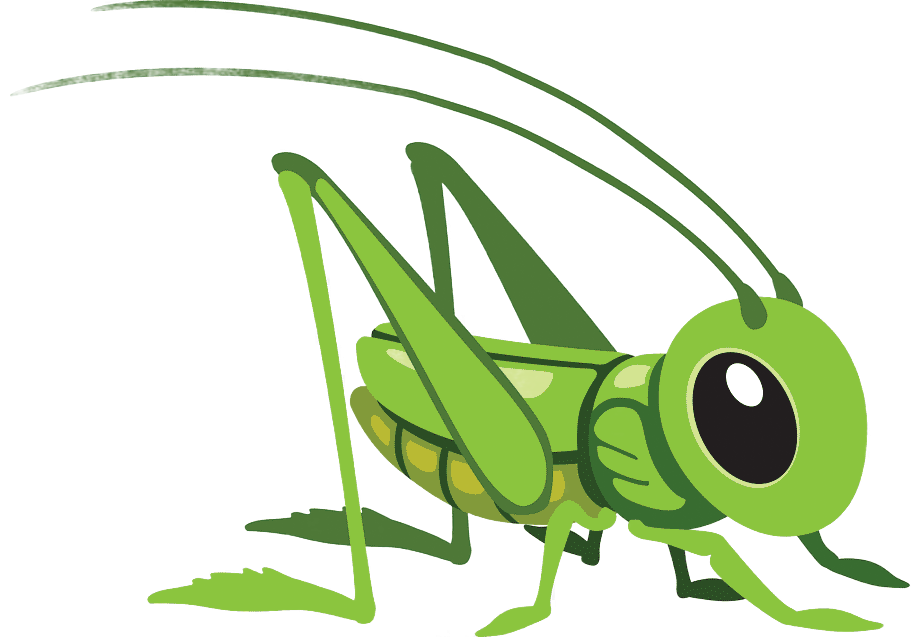
Гигантский кузнечик Siliquofera grandis: «Зелёный Голиаф»
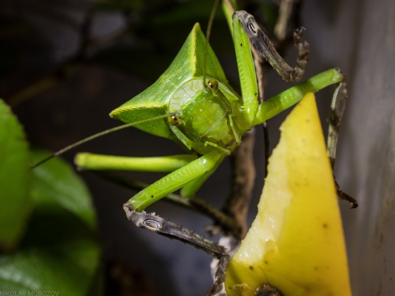
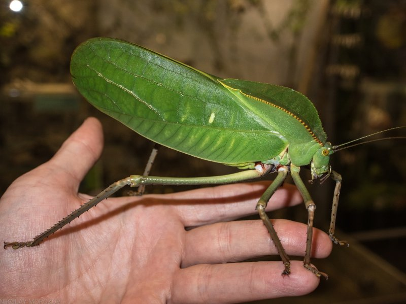
Если вы думаете, что кузнечики — это мелкие букашки, познакомьтесь с Siliquofera grandis. Это один из крупнейших представителей семейства настоящих кузнечиков: размах крыльев достигает 25 сантиметров, а длина тела самок со сложенными крыльями превышает 13 сантиметров . Обитает этот гигант в тропических лесах Новой Гвинеи, на архипелаге Ару и на северо-востоке Австралии, предпочитая кроны деревьев — на землю он спускается крайне редко.
Внешность у него соответствующая: переднеспинка сильно вытянута вверх и назад, образуя подобие хитинового капюшона, а ярко-зелёная листовидная форма тела делает его практически неотличимым от листвы. Интересно, что самцы этого вида не стрекочут — у них нет стридуляторного аппарата на надкрыльях. Вместо привычной «песни» они издают шуршащие звуки, используя тазо-грудинные органы, и делают это скорее для отпугивания, чем для привлечения партнёрш.
Розовый кузнечик Sigaus robustus
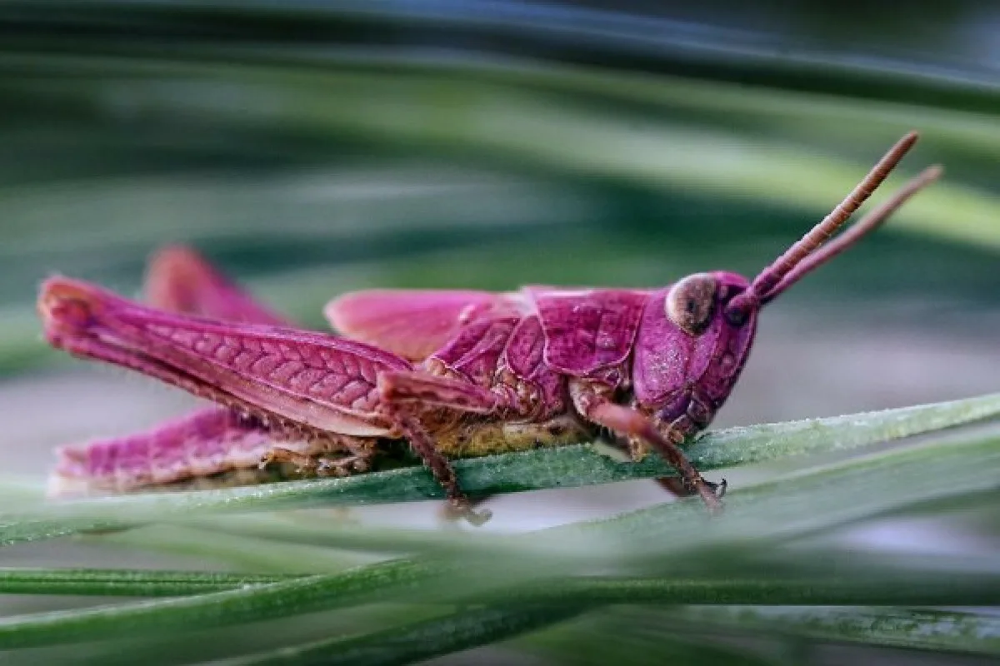
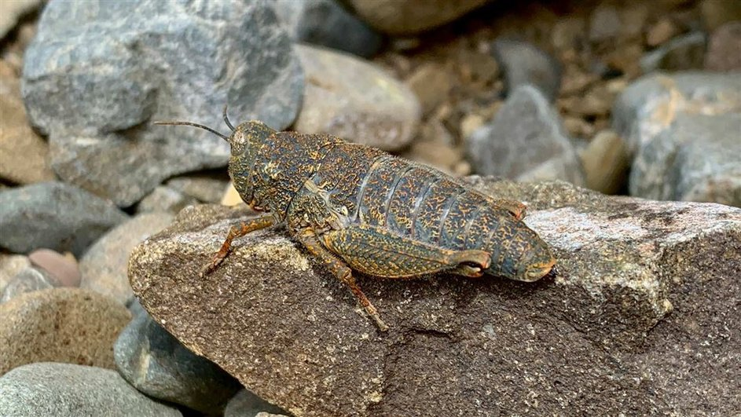
В 2025 году в Новой Зеландии произошло событие, взбудоражившее биологов: инспекторы Департамента охраны природы обнаружили кузнечика ярко-розового цвета. Обычно представители вида Sigaus robustus окрашены в серо-коричневые тона и идеально сливаются с камнями и почвой. Розовый окрас — результат редчайшей генетической мутации (эритризма), вызывающей избыточную выработку красного пигмента .
Самое удивительное, что этот вид сам по себе крайне редок и находится под угрозой исчезновения. В 2018 году вокруг одной из известных популяций даже установили ограждённый участок для защиты от хищников — ежей, кошек и птиц. Розовая особь была найдена за пределами ограды, что делает встречу почти невероятной. Как отметили в Департаменте, «подобные случаи случаются раз в много лет, но встретить такого яркого насекомого практически нереально» . Увы, яркий окрас делает кузнечика крайне уязвимым для хищников, так что у него осталось всего несколько месяцев до зрелости — и все они пройдут в режиме повышенной скрытности.
Дыбка степная: кузнечик-«феминистка»
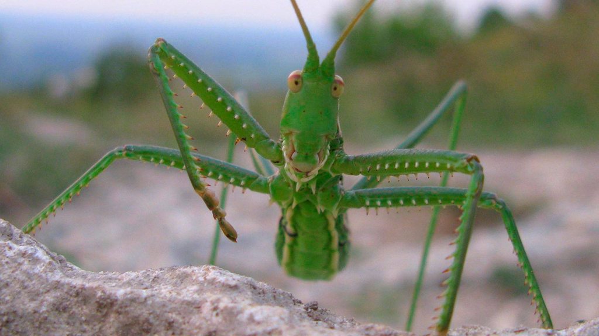
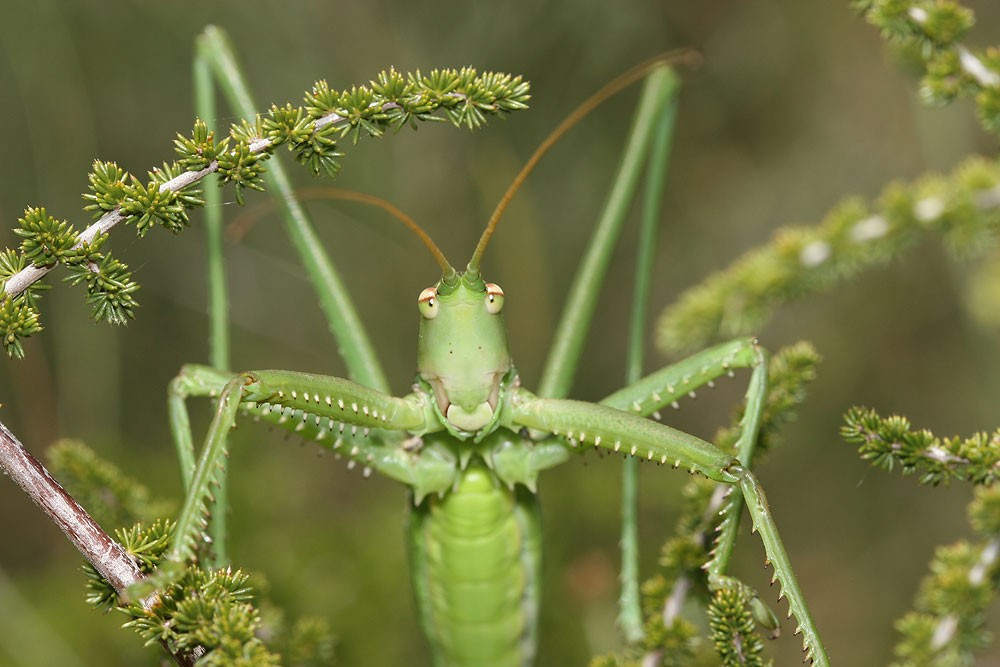
Дыбка степная (Saga pedo) — один из самых крупных кузнечиков России и, пожалуй, самый необычный с точки зрения биологии размножения. Все популяции этого вида по всему ареалу представлены только самками, которые размножаются партеногенетически — без участия самцов . Это не просто редкое явление, а полноценная стратегия выживания: вид не тратит ресурсы на поиск партнёра и может быстро увеличивать численность в подходящих условиях.
Но этим её странности не ограничиваются. Дыбка — не мирный вегетарианец, а активный хищник. Она охотится преимущественно ночью, питаясь другими кузнечиками, кобылками, богомолами, мелкими жуками и клопами. По сути, это «волк» среди прямокрылых, регулирующий численность насекомых-вредителей в степных экосистемах . Дыбка занесена в Красную книгу России, а её популяции на Жигулёвских горах находятся на северной границе ареала.
Кузнечик Ectomoptera nepicauda: ультразвуковой «скрипач»
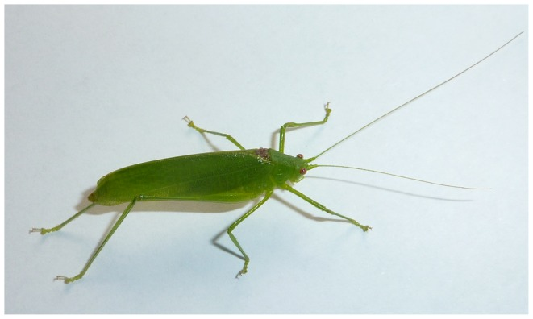
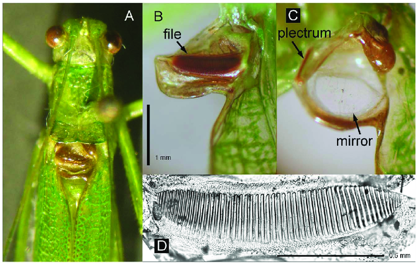
Обитатель лесов Восточной Африки, Ectomoptera nepicauda прославился своей асимметричной акустической системой. Левое надкрылье самца почти полностью состоит из стридуляционной жилки с 54 широкими зубцами — она работает как смычок скрипки. Правое надкрылье несёт зеркальце и плектрум — резонатор и «медиатор». Используя эту конструкцию, кузнечик издаёт короткие тональные сигналы с частотой от 80 до 120 кГц — это настоящий ультразвук, недоступный человеческому слуху .
Такая частота не случайна: она позволяет сигналу распространяться в густом лесу, не привлекая внимания хищников, которые слышат в более низком диапазоне. Учёные предполагают, что насекомое производит звук не просто трением, а за счёт очень быстрых движений крыльев, активирующих резонатор — своеобразный «щелчковый» механизм . Самцы активны только в темноте, а самки, увы, летают плохо из-за укороченных крыльев.
Радужный кузнечик Dactylotum bicolor
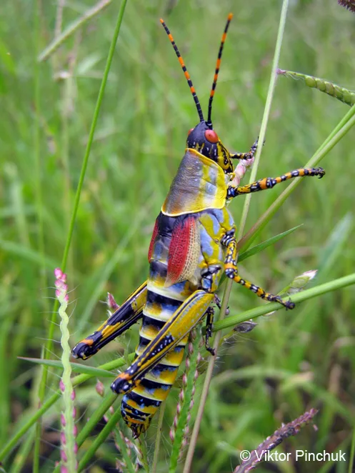
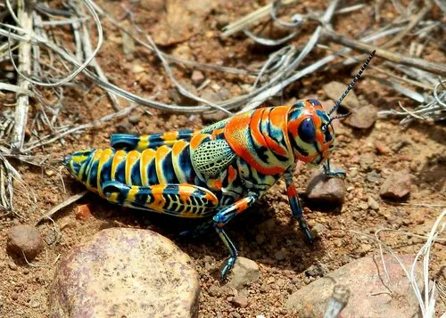
Обитатель короткотравных прерий Северной Америки, Dactylotum bicolor — пожалуй, самый яркий представитель семейства. Его окраска — чёрная с контрастными красно-жёлтыми отметинами, бледно-зелёной переднеспинкой и фиолетовым отливом — не имеет ничего общего с маскировкой. Это классический пример апосематизма, или предупреждающей окраски: яркие цвета сигналят хищникам «я несъедобен» .
Эксперименты показали, что ящерицы и птицы действительно избегают радужных кузнечиков, предпочитая более скромно окрашенных сородичей. При этом Dactylotum bicolor не умеет летать — у него нет развитых крыльев, так что вся защита строится на яркости и, вероятно, неприятном вкусе. Интересно, что личинки этого вида питаются исключительно одним растением — ложной ивой Райта, тогда как взрослые особи становятся полифагами .
Кузнечик-лист Pseudophyllus titan
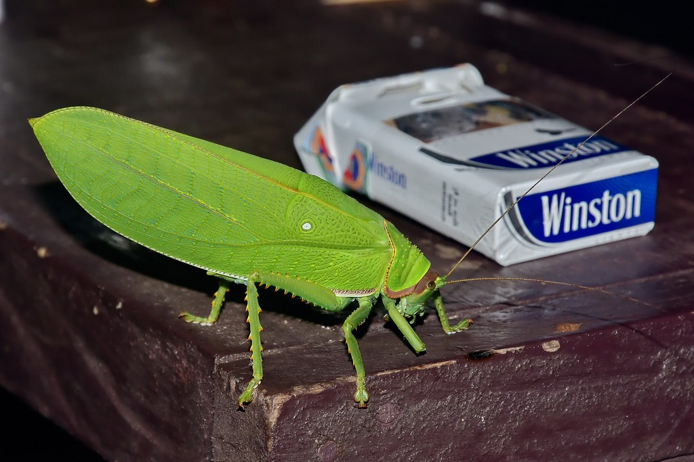
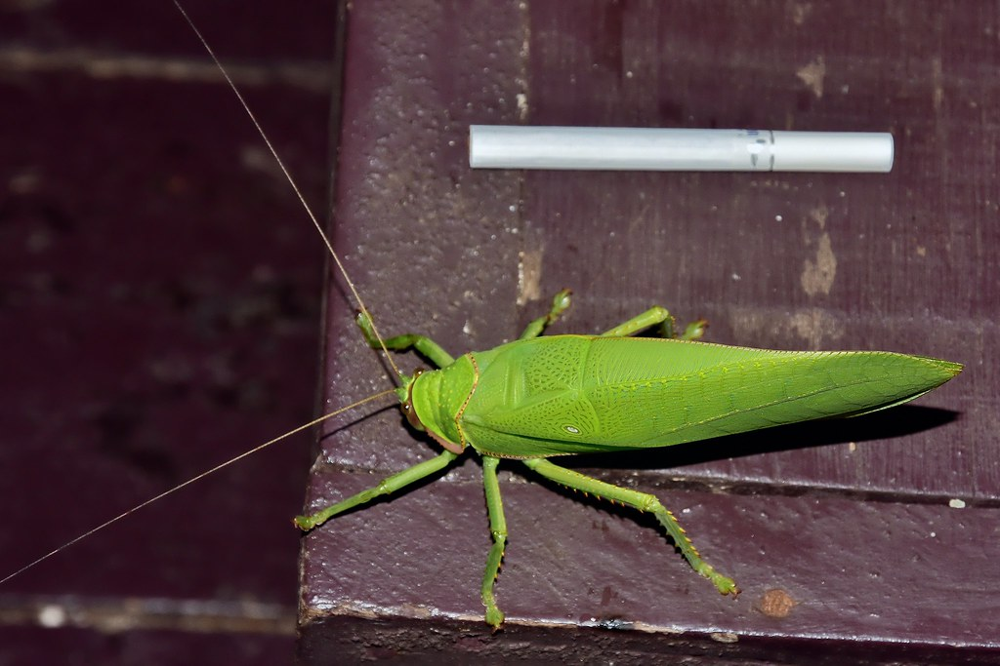
Pseudophyllus titan — ещё один гигант, обитающий в кронах тропических лесов Юго-Восточной Азии. Длина тела достигает 13 сантиметров, размах крыльев — около 23 сантиметров, а форма тела и окраска настолько точно имитируют лист, что заметить его среди листвы практически невозможно . В отличие от многих сородичей, самцы этого вида стрекочут довольно громко и мелодично — их песня напоминает птичье щебетание, и звучит она преимущественно ночью.
Любопытный факт: в некоторых частях ареала этих кузнечиков жарят и едят как закуску. Засушенные экземпляры также продаются коллекционерам под названием «Sasuma grasshopper» . Так что один и тот же вид может быть и объектом восхищения натуралистов, и источником белка для местных жителей.
Карликовые кузнечики Tetrigidae
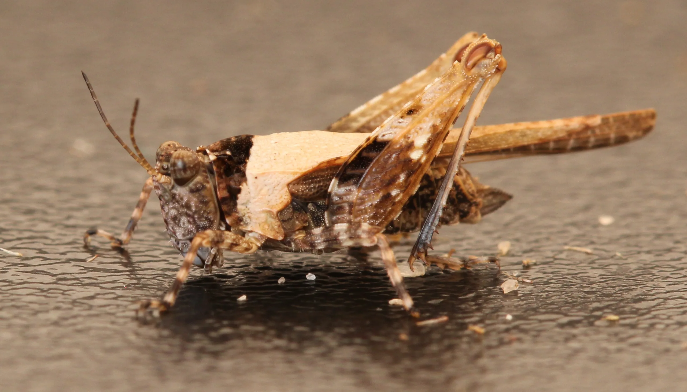
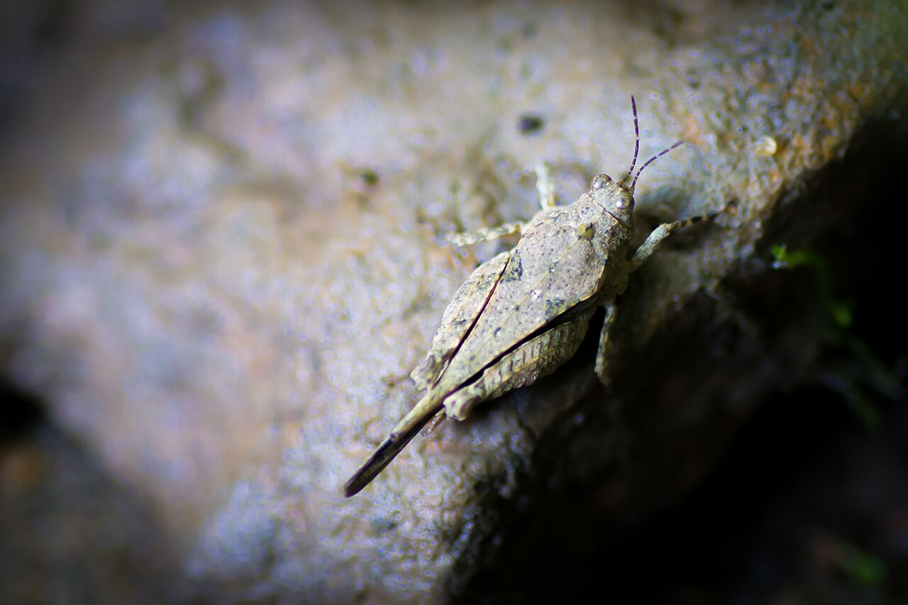
Не все необычные кузнечики — гиганты. Семейство Tetrigidae, или карликовые кузнечики, включает около 1660 видов, большинство из которых не превышает 20 миллиметров в длину. Их главная особенность — сильно увеличенная переднеспинка, которая покрывает всё тело и часто вытянута вверх или назад, образуя гребень или листовидную лопасть .
Эти насекомые обитают преимущественно во влажных и полуводных местообитаниях, многие отлично плавают и ныряют при опасности. У них нет ни стридуляционных органов, ни слуховых тимпанов — они не стрекочут и не слышат сородичей в привычном смысле. Зато некоторые виды демонстрируют выраженный полиморфизм по развитию переднеспинки и крыльев, что позволяет им адаптироваться к разным условиям среды